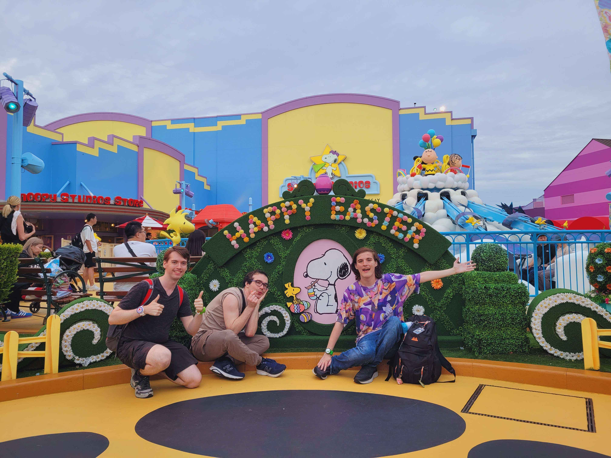
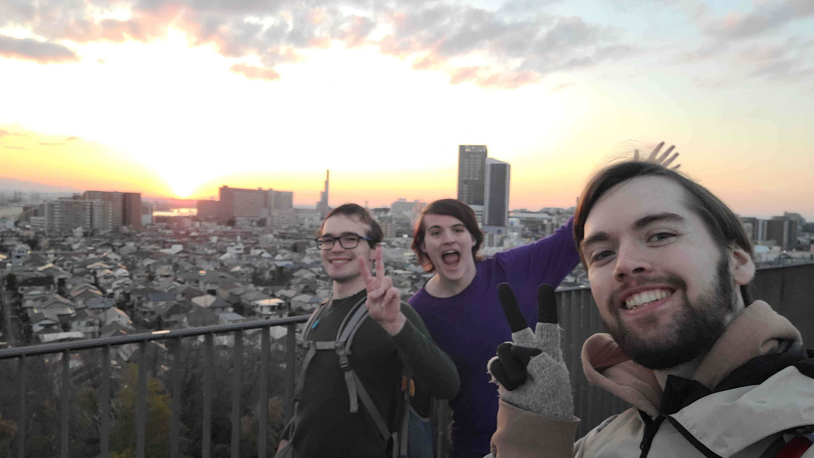

| The Boys Japan | |
|---|---|
|

Founders of The Boys Japan.
|
|
| Established | 2024 |
| Origin | Kansai Gaidai University, Hirakata, Osaka, Japan |
| Years active | 2024-present |
| Leader | None |
| Notable shenanigans | See list of shenanigans |
| Notable people | See list of The Boys International members |
| Part of | The Boys International |
The Boys Japan, also known as Nihongo Bros, is a group of aho gaijin, drunkards, and Andrew formed in 2024 as an expansion of The Boys. Following Cameron Impostor and Luke temporarily moving to Japan, the group grew to include people not found in the original group. The Boys Japan currently remains scattered through various subgroups and within Chat 3, though the three founding members maintain the group overall.
When Cameron Impostor moved to Japan, he met up with Luke in Hirakata. During this meeting, Andrew, the third and final founding member of the group, approached the two as he had known Luke prior. The three went to Don Quijote, where they quickly formed a trio. This trio then branched out further into the wider group, leading to the formal formation of The Boys Japan.

The Boys Japan are currently scattered across the planet. The founding members maintain consistent shenanigans with the others sometimes joining in. The group is otherwise absorbed into the wider Chat 3 and The Boys International.
{kind=link}